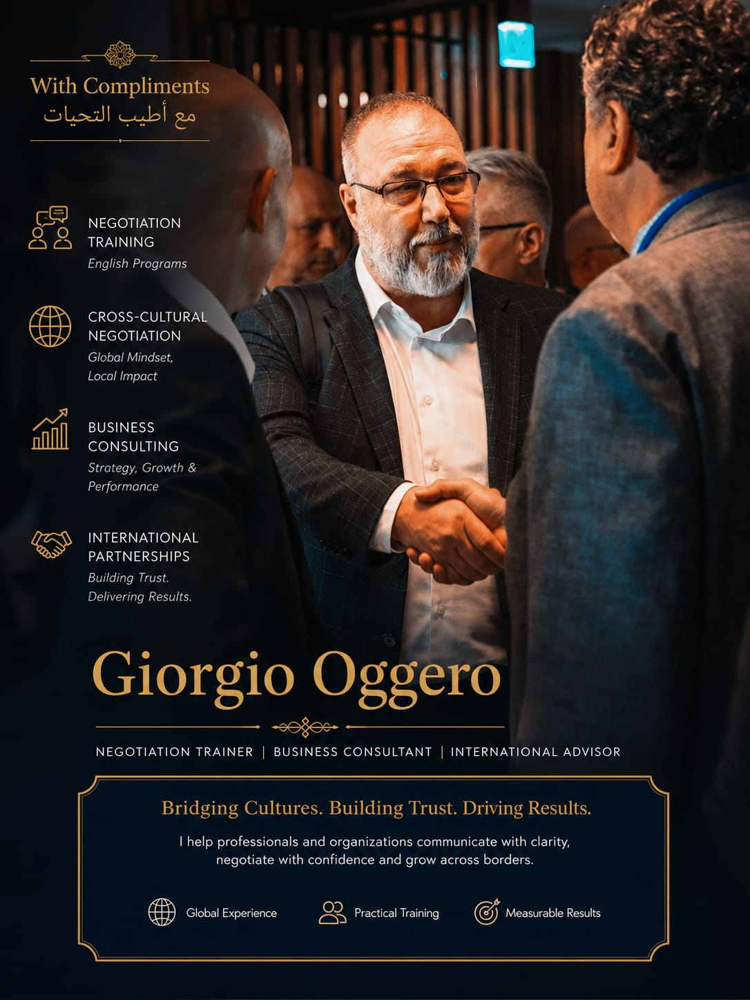

Negotiation Training
Programs in Italian and English on negotiation, business communication, objection handling, role play and simulations.
Negotiation Training • Business Consulting • International Advisory
I help professionals, companies and sales teams communicate with clarity, negotiate with confidence and grow across borders.

Profile
With strong experience in export development, cross-cultural negotiation, sales, marketing and corporate training, Giorgio Oggero supports companies, executives and sales teams in preparing and managing international negotiations, entering foreign markets and building concrete commercial paths.
Areas of work
Programs in Italian and English on negotiation, business communication, objection handling, role play and simulations.
Preparation for relationships with international counterparts, focusing on cultural differences, expectations, trust and decision-making processes.
Support for market analysis, positioning, commercial channels, local partners and go-to-market strategies in GCC/UAE and international markets.
Value proposition
For companies and professionals
Tailored programs for sales teams, export managers, entrepreneurs, business developers and managers involved in negotiations with foreign clients, partners and stakeholders.
Request informationLinkedInContact & CV
For training, consulting and collaboration requests.
Send an emailProfessional profile and updates on negotiation training and international business development.
Open LinkedInMobile: +39 338 7096084
Corso Trapani 25, 10139 Turin, Italy
Download
Updated English version for international contacts and corporate clients.